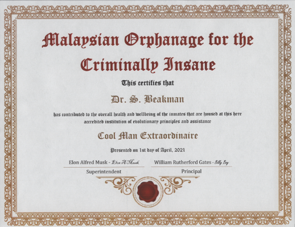
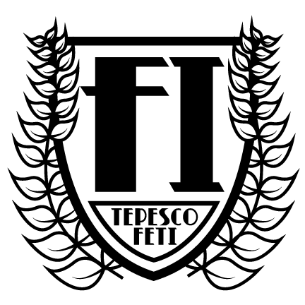

<!DOCTYPE html>
<html lang="en">
	<head>
		<meta charset="UTF-8">
		<meta name="viewport" content="width=device-width, initial-scale=1.0">
		<meta name="Description" content="The Fetal Institute">
		<meta name="author" content="theweeklystupid.com">
		<meta name="Copyright" content="Copyright (c) 2019 theweeklystupid, all rights reserved.">
		<title>Coolfetus - About</title>
		<link rel="stylesheet" href="css/default.css" />
		<link rel="stylesheet" href="css/about.css">
	</head>
	<body id="about">
		<header>
			<h1><a href="index.html"> </a></h1>
			<div id="social"></div>
		</header>
		<nav id="main_nav"><!-- navigation is supplied with javascript --></nav>
		<section id="content">
			<aside id="about_intro">
				<h1>THE FETAL INSTITUTE</h1>
				<p>&nbsp&nbsp&nbsp&nbsp&nbspThe Fetal Institute has been in existence for hundreds of years.  
					It has been in almost every country in the world.  Sometimes it will exist in multiple 
					locations without any locations knowing about each other.  There are also times that the 
					Institute will vanish for decades only to return stronger than ever.
				</p>
				<p>&nbsp&nbsp&nbsp&nbsp&nbspThe focus of The Fetal Institute is to provide a place where 
					ideas are like fetal seeds.  Where a scientist is free to pursue his or her dreams.  I 
					plan to continue the proud history of this encredible institute.
				</p>
				</br>
				<h1>DOCTOR BEAKMAN</h1>
				
				<p>&nbsp&nbsp&nbsp&nbsp&nbspDr. Beakman has currently been put in charge of the institute 
					science and testing.  He has all the best degrees from the best institutions in the world.  
					As we get confirmation of his degrees we will display them here
				</p>
			</aside>
			<aside>
				<h1>DEGREE NUMBER ONE</h1>
				<a href='images/about/diploma_one.pdf' target='blank'></a>
				<p>&nbsp&nbsp&nbsp&nbsp&nbspIf you want a better view click and downlaod.  Feel free to print
					a copy for yourself.  If you send the good doctor a copy I am sure he would sign it for you.
					Make sure you include a self addressed stamped envelop and send it to The Fetal Institute,
					Coolfetus lane, care of Dr. Beakman.
				</p>
			</aside>
			<aside>
				<h1>CERTIFICATE NUMBER ONE</h1>
				<a href='images/about/MOCI_certificate.pdf' target='blank'></a>
				<p>&nbsp&nbsp&nbsp&nbsp&nbspDuring a recent disappearance it was found that the good doctor was whisked away for an important project.
					He was invlved in the most interesting of studies with the most interesting of persons in the most interesting of locations.
					It was all very interesting.
				</p>
			</aside>
			<aside>
				<h1>INSTITUTE LOGOS</h1>
				<p>&nbsp&nbsp&nbsp&nbsp&nbspThere has been many iterations of the official seal logo.  
					Below I will give a short description of each iteration.</p>
			</aside>
			<aside class="width_400">
				<h3>ORIGINAL LOGO</h3>
				
				<p>&nbsp&nbsp&nbsp&nbsp&nbspThis original logo was developed by Swedish monks in the year 
					300BC.  They wanted something simple to show that complicated research did not take a 
					complicated mind.  That is was hard work and determination, not a complicated logo that 
					made the world lay flat.
				</p>
			</aside>
			<aside class="width_400">
				<h3>COMPLICATED LOGO</h3>
				
				<p>&nbsp&nbsp&nbsp&nbsp&nbspThis logo was established during the dark ages while in the 
					middle of the enlightenment.  The most elite thought it would make them appear above the 
					common man.  This was a dark time in the history of the institute.  The members started 
					to deviate from the core mission.  This time was doomed from the moment they altered the 
					logo.
				</p>
			</aside>
			<aside class="width_400">
				<h3>JAZZ LOGO</h3>
				
				<p>&nbsp&nbsp&nbsp&nbsp&nbspThe word cool was popularized by jazz musicians in the late 1930s.  
					The institute decided to change the verbiage from Warm Fetus to Cool Fetus.  This was an 
					obvious decision.  The current elders got together to discuss a change and nothing better 
					has or probably will ever be found.
				</p>
			</aside>
			<aside>
				<h1>INSTITUTE SEALS</h1>
				<p>&nbsp&nbsp&nbsp&nbsp&nbspThere have been many iterations of the official seal.  Below I 
					will give a short description of each iteration.  I will also include a reason for having 
					both a logo and a seal.
				</p>
				<br/>
			</aside>
			<aside class="width_400">
				<h3>FETI LOGOS</h3>
				<h3>VERSUS</h3>
				<h3>FETI SEALS</h3>
				<p>&nbsp&nbsp&nbsp&nbsp&nbspThe sorted history of the fetus lead to a rebellion early on. 
					The original founders Fred and Barney had a major disagreement about what to use to symbolize 
					the institute. They would have lunch every day at the rock quarry to hammer out their issues. 
					In the end, they decided to have two symbols and as time went by one became the logo and the 
					other became the seal. We are not sure which design was from Fred and which design was from 
					Barney. We do know that their wives Wilma and Betty had some influence on their designs.
				</p>
			</aside>
			<aside class="width_400">
				<h3>ORIGINAL SEAL</h3>
				
				<p>&nbsp&nbsp&nbsp&nbsp&nbspThe original seal was more intricate than the logo.  
					When the original logo was redesigned the seal was ignored.  At that point in history, a 
					seal was considered low brow and the elitist wanted it destroyed.  Fortunately, it was 
					hidden by a younger member that understood times would change.
				</p>
			</aside>
			<aside class="width_400">
				<h3>JAZZ SEAL</h3>
				
				<p>&nbsp&nbsp&nbsp&nbsp&nbspThe seal was changed at the same time as the logo.  
					This change was made because of the same reason as the logo.
				</p>
			</aside>
		</section>
		<!-- end Content -->
		<footer>
			<p>&copy; 2019 The Fetal Institute : All rights reserved.</p>
		</footer>
	</body>
	<script type='text/javascript' src='js/default.js'></script>
</html>
